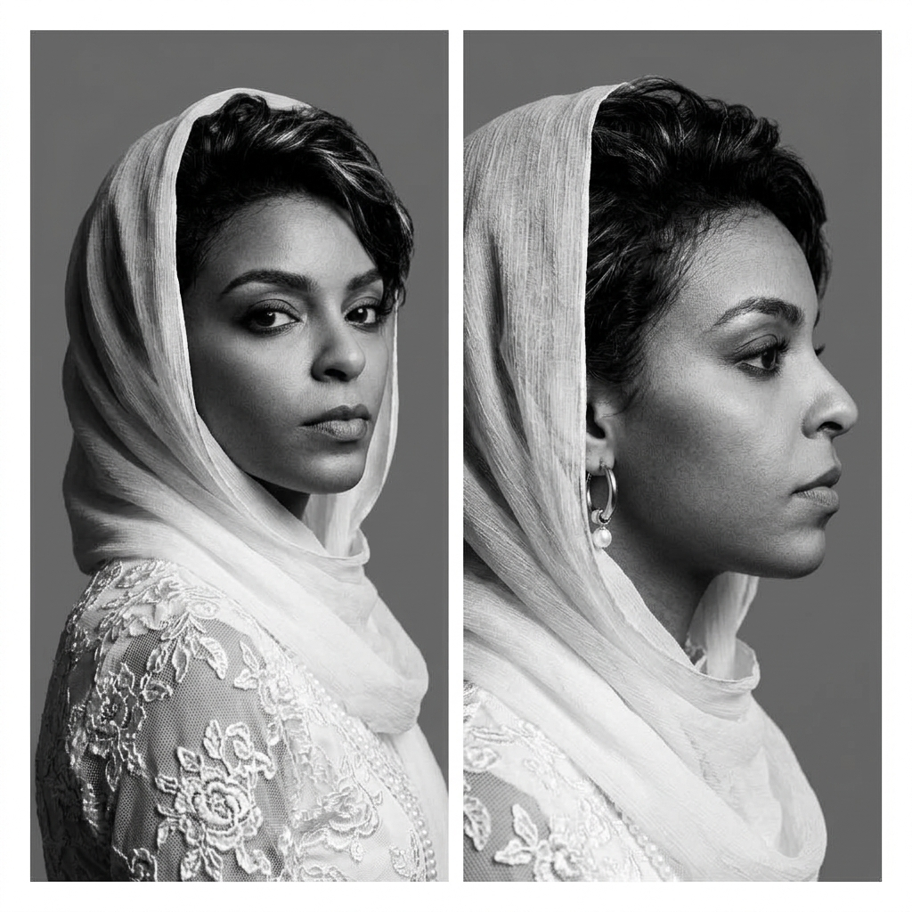

مريم وهي تمضي للبعيد
فازت بجائزة الطيب صالح التقديرية للقصة القصيرة – 2021، ونُشرت في صحيفة مداميك الإلكترونية.
رابط القصة ↗جائزة الطيب صالح التقديرية آلاء رفعتALAA RIFAT
آلاء رفعتALAA RIFAT
في اللغة تبدأ الحكاية، وبها يتّضح المعنى
كاتبة ومحررة لغوية ومدربة ومؤسسة
قدّمت أول ورشة متخصصة في مهارات التدقيق اللغوي في السودان.
أشتغل على صلة اللغة بالإبداع والمعرفة؛ أكتب وأحرر، وأصمم تجارب تدريبية تتيح للآخرين صقل أدواتهم التعبيرية وتوسيع آفاقهم.

01 / 07من الكلمة تتشكل الفكرة، ومن الفكرة تنفتح مساحات نتقاسم فيها المعرفة.
01 — من أنا
كاتبة ومحررة ومدربة، أعمل منذ عام 2016 في التدقيق والتحرير اللغوي، والكتابة الإبداعية، وصناعة المحتوى.
تنوّعت الأعمال التي راجعتها وحررتها بين الأدب والبحث والإعلام والترجمة، وقدمت خدمات لغوية لجهات ثقافية ودور نشر ومؤسسات تعليمية وتجارية في السودان ومختلف أنحاء العالم العربي. وإلى جانب عملي التحريري، أعمل على إطلاق مبادرات ومساحات تدريبية تنمّي مهارات الكتابة والتعبير.
حصلت على درجة البكالوريوس في التخدير والإنعاش من جامعة الرباط الوطني بالخرطوم عام 2016، ثم واصلت تطوير مساري المهني عبر برامج متخصصة في التدقيق اللغوي والتحرير الأدبي والنقد الأدبي والتعليم الإلكتروني.
02 — نصوص وأفكار
مختارات من القصص والدراسات والمقالات التي نشرتها منصات ومشروعات أدبية ونقدية.
فازت بجائزة الطيب صالح التقديرية للقصة القصيرة – 2021، ونُشرت في صحيفة مداميك الإلكترونية.
رابط القصة ↗جائزة الطيب صالح التقديريةقصة نُشرت ضمن أنطولوجيا القصة القصيرة في الأدب الإفريقي، من إعداد الروائي عبدالعزيز بركة ساكن.
دراسة نشرها المختبر السعودي للنقد، وهي مشروع التخرج الختامي ضمن برنامج «ناقد 3».
رابط الدراسة ↗مقالة نشرتها مجلة «الثعلب الأرجواني» باللغات العربية والإنجليزية والفرنسية.
قراءة المقالة ↗مقالة منشورة على منصة «كتابة».
قراءة المقالة ↗03 — مكتب آلاء رفعت
عبر مكتب آلاء رفعت للخدمات اللغوية الاحترافية، أعمل على تقديم خدمات تحريرية تصون سلامة اللغة، وتحترم خصوصية كل نص وسماته الأسلوبية.
سبق لي العمل محررةً ومدققةً لغويةً لدى دار نرتقي للنشر والتوزيع ومؤسسة الفأل الثقافية في الخرطوم، ومنشورات وسم في الكويت.
04 — مشاركة المعرفة
ورش ولقاءات، وبرامج مهنية التحقت بها لتعميق خبرتي في التحرير والتدريب.
مساحة للحوار
سلسلة لقاءات شهرية نظمها مكتب آلاء رفعت للخدمات اللغوية الاحترافية عبر منصة زوم، من يوليو إلى نوفمبر 2024؛ تناولت أسئلة الكتابة وتحدياتها.
05 — المؤسسات والمبادرات
مجموعة رفعة المحدودة، ومقرها لندن، وتعمل في مجال الريادة اللغوية والتمكين المعرفي. تأسست في 26 فبراير 2026، وتندرج تحت مظلتها مؤسستان متكاملتان:
أسستها آلاء رفعت في 16 يناير 2025. مؤسسة مستقلة تُعنى بتنظيم الورش والندوات والدورات في مجالات الإبداع والتعبير واللغة، كما تدعم المبادرات التعليمية والمجتمعية عبر محتوى تفاعلي يُقدَّم عبر الإنترنت.
«آيز هَب»: مبادرة تجريبية مجانية لدعم خمسة مشاريع تدريبية وإبداعية حول العالم، عبر تنظيم جلسات زوم وإعداد المواد الترويجية والتعريف بالمشاريع.
«القصة مع آلاء رفعت»: سلسلة مرئية توثق تجارب مبدعين ناطقين بالعربية من السودان ومصر وتشاد وغيرها. ضم الموسم الأول خمسة لقاءات.
06 — حضور إعلامي
مشروع يُعنى بتوثيق تجارب المبدعين الناطقين بالعربية؛ أقدم حلقاته وأتولى إدارة حواراتها.
تقرير صحفي تناول ورش مهارات التدقيق اللغوي التي قدمتها، وأبرز تجربتي في هذا المجال.
07 — محطات مهنية
توصية من وزارة الثقافة في دولة الإمارات العربية المتحدة بمنحي الإقامة الذهبية ضمن فئة المبدعين في الثقافة والفنون، تقديرًا لإسهاماتي الإبداعية والثقافية.
الجائزة التقديرية في جائزة الطيب صالح للقصة القصيرة للكتّاب الشباب، عن قصة «مريم وهي تمضي للبعيد».
جائزة تقديرية في مجال القصة الومضة من جائزة كتوبيا.
لنتحدث عن مشروعك القادم
أرحب بالتواصل في شأن مشروعات الكتابة والتحرير والتدريب، وفرص التعاون الثقافي.
راسلني عبر البريد